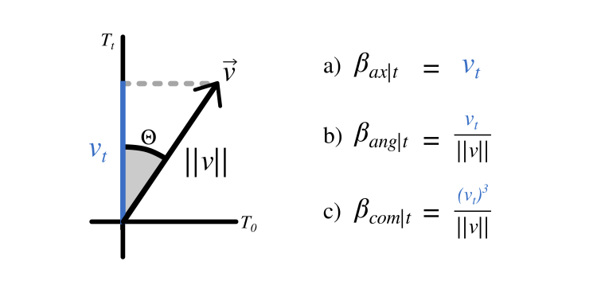
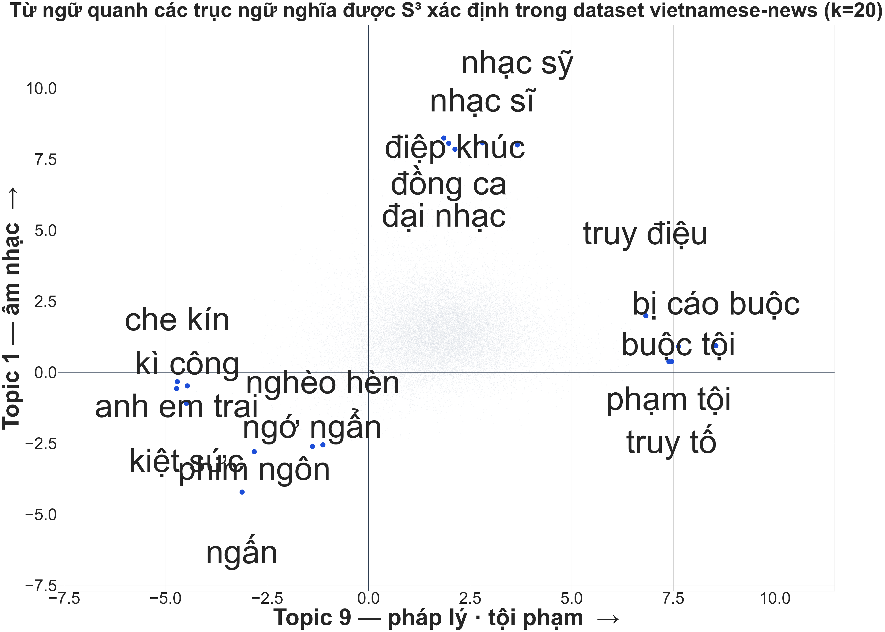
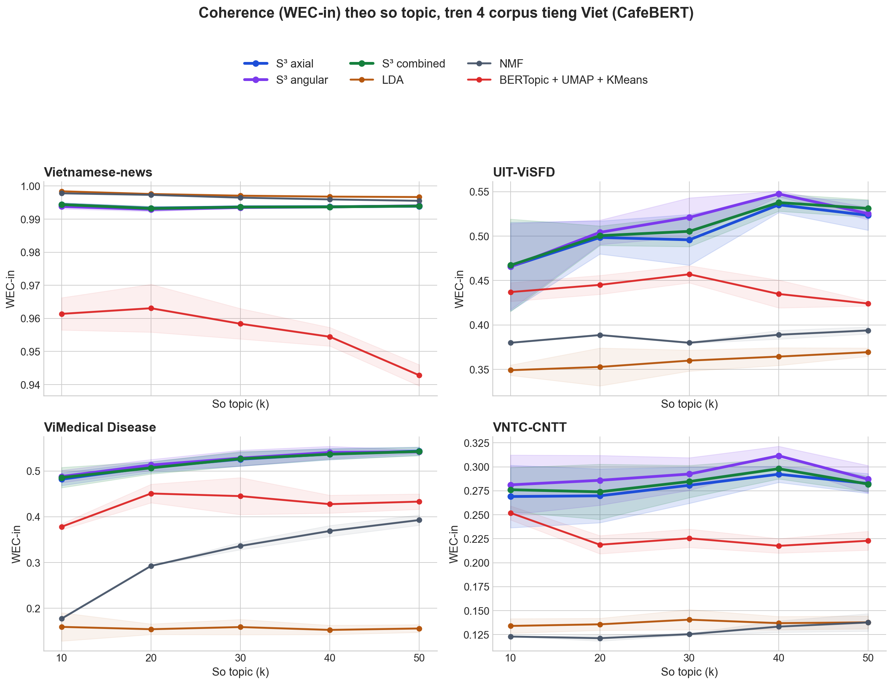
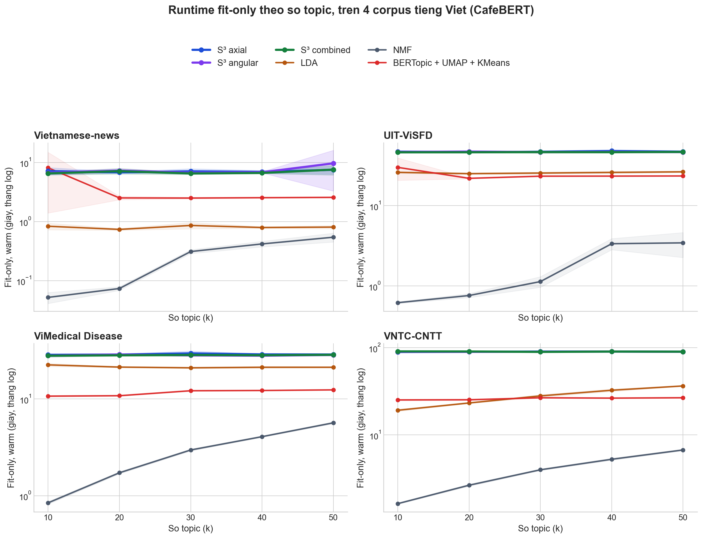

← → chuyển slide · F toàn màn hình · ESC tổng quan
Nội dung trình bày
1
S³ là gì?Pipeline tổng thể, 6 bước, 3 biến thể β, nhìn trực tiếp trục bằng Concept Compass
2
Tái lập cho tiếng Việtpyvi tách từ, CafeBERT vs multilingual-E5
3
Thiết lập & kết quả thực nghiệm4 corpus VN, coherence & diversity, tốc độ, refit_transform()
4
Đánh giá bằng nhãn thậtAUC trục ICA, ViSFD, VTSNLP, ảnh hưởng n_topics
5
Ứng dụng thực tếDashboard phát hiện bất thường + định tuyến câu hỏi ngân hàng — cả hai chạy thật
Phần 1 — S³ là gì
Pipeline S³ tổng thể
X = A · S — công thức sinh dữ liệuMỗi embedding tài liệu (X) được coi là một bản trộn của các trục chủ đề (A) theo tỷ lệ (S).
W = V · Cᵀ — chiếu từ vựng lên trụcTừ điển (V) được chiếu lên các trục để lấy toạ độ W, từ đó suy ra từ khoá đại diện cho từng trục.
Phần 1 — S³ là gì
Thuật toán S³ — 6 bước
① Mã hoá tài liệu Encoder → ma trận X
② FastICA Phân rã X = A · S
③ Mã hoá từ vựng Cùng encoder → V
④ Ma trận giải trộn C = A⁺ (Moore–Penrose)
⑤ Chiếu từ lên trục W = V · Cᵀ
⑥ Word importance β Top-k từ mô tả mỗi topic
β CÓ THỂ ÂM — ĐẶC TRƯNG RIÊNG CỦA S³
β có thể âm, nên mỗi trục vừa thể hiện "chủ đề này LÀ gì", vừa thể hiện "chủ đề này KHÔNG PHẢI là gì" — LDA và BERTopic chỉ liệt kê được từ khoá dương.

Hình 1 — Trực giác hình học: axial / angular / combined
① AXIAL — lấy nguyên toạ độβ = Wjt: ưu tiên từ có hình chiếu lớn nhất trên trục, không xét mức độ liên quan đến các trục khác.
② ANGULAR — chuẩn hoá theo gócβ = Wjt/‖Wj‖: ưu tiên từ mà gần như toàn bộ ý nghĩa nằm dọc trục, nhưng dễ nhiễu với từ hiếm.
③ COMBINED — cấu hình mặc định của Nhómβ = (Wjt)³/‖Wj‖: luỹ thừa bậc ba giữ dấu và khuếch đại giá trị lớn, sau đó chuẩn hoá theo góc — kết hợp ưu điểm của cả hai công thức trên.
Phần 1 — S³ là gì
Nhìn trực tiếp trục ngữ nghĩa — Concept Compass
Minh hoạ trực tiếp bằng một checkpoint đã huấn luyện: chọn hai trục bất kỳ, chiếu toàn bộ 20.000 từ vựng lên hai trục đó, không sử dụng bất kỳ nhãn giám sát nào.

Concept Compass — trục hoành là chủ đề "pháp lý / tội phạm", trục tung là chủ đề "âm nhạc" (Vietnamese-news, k=20)
TỰ TÁCH RA, KHÔNG AI GÁN NHÃN
Cực trên toàn từ về nhạc (nhạc sĩ, hoà nhạc, điệp khúc...), cực phải toàn từ về pháp lý (buộc tội, truy tố, toà án...) — model tự nhóm được vậy chỉ từ dữ liệu thô, không hề biết trước 2 chủ đề này là gì.
CÁCH ĐỌC MỘT TRỤC
Ý nghĩa của một trục được xác định bằng cách đọc từ khoá ở hai đầu trục — đây là cách Nhóm đặt tên và kiểm chứng các trục ở các phần sau.
Phần 2 — Tái lập tiếng Việt
Tiền xử lý: tách từ tiếng Việt với pyvi
VẤN ĐỀ — CountVectorizer mặc định vỡ từ ghép"trầy xước" → tách theo khoảng trắng → "trầy" + "xước" — hai âm tiết vô nghĩa riêng lẻ
→ bước chiếu từ lên trục (W = V·Cᵀ) sẽ sai ngay từ đầu vào
# Tiền xử lý bắt buộc cho tiếng Việt from pyvi import ViTokenizer
segmented = [ViTokenizer.tokenize(doc) for doc in documents] # "trầy xước" → "trầy_xước" (CountVectorizer giữ _ là ký tự hợp lệ)
GIẢI PHÁP — pyvi ViTokenizer
Nối âm tiết bằng _ để CountVectorizer coi đó là một token duy nhất, đổi thêm token_pattern=r"(?u)\b[^\W\d][^\W]*\b" để giữ được dấu gạch dưới. Thay đổi bắt buộc so với paper gốc, vốn chỉ thử nghiệm trên tiếng Anh.
Phần 2 — Tái lập tiếng Việt
CafeBERT vs multilingual-E5
CafeBERT (uitnlp/CafeBERT)
BERT masked-LM pretrained cho tiếng Việt. Không phải sentence embedder — cần tự cài masked-mean pooling và chuẩn hoá L2.
multilingual-E5-base (intfloat/)
Sentence-transformer đầy đủ, có sẵn pooling và chuẩn hoá. Thêm tiền tố "query: " theo quy ước của E5.
Encoder
Mã hoá 11.122 doc (s)
AUC 1 trục tốt nhất
AUC gộp trục
CafeBERT
34,9
0,689
0,867
E5 multilingual-base ✓
21,9
0,722
0,887
BGE-M3 (đối chứng)
69,6
0,719
0,898
ViSFD, n_topics=40, AUC trung bình trên 11 khía cạnh. E5 nhanh hơn CafeBERT 1,6 lần và có AUC cao hơn — được chọn làm encoder mặc định cho các thực nghiệm còn lại.
Phần 3 — Thiết lập & kết quả thực nghiệm
Thiết lập thực nghiệm
Thực nghiệm được chạy trên 4 kho ngữ liệu tiếng Việt, so sánh ba biến thể của S³ với ba baseline, đo bằng các chỉ số dưới đây, lặp lại trên nhiều seed và nhiều giá trị k để đảm bảo độ tin cậy.
Protocol: k ∈ {10, 20, 30, 40, 50} · 4 seed (11, 29, 42, 47) · 4 × 6 × 5 × 4 = 480 run · không tinh chỉnh siêu tham số
Phần 3 — Thiết lập & kết quả thực nghiệm
Kết quả coherence & diversity

Hình 2 — WEC-in theo số trục/chủ đề · 4 corpus VN × 6 mô hình · 480 lần chạy (CafeBERT)
S³ THẮNG 74% Ô
Trên tổng 80 ô corpus×seed×k, S³ thắng 59 ô — thắng gần tuyệt đối ở ViSFD (19/20), ViMedical (20/20) và VNTC-CNTT (20/20).
NGOẠI LỆ: VIETNAMESE-NEWS
Riêng corpus này, kết quả ngược hoàn toàn — S³ thua toàn bộ 0/20 ô, LDA và NMF chiếm ưu thế.
DIVERSITY CAO ĐỒNG THỜI
S³ vẫn giữ diversity cao (0,73–0,76) so với LDA (0,48) và BERTopic (0,43) — không đánh đổi mạch lạc lấy trùng lặp từ khoá.
Phần 3 — Thiết lập & kết quả thực nghiệm
Kết quả tốc độ

Hình 3 — Fit-only time (thang log) — trái ngược kết quả paper gốc
Mô hình
Fit TB (s)
S³ combined
42,9
LDA
18,9
BERTopic
16,4
NMF
2,3
TRÁI VỚI PAPER GỐC
Paper gốc: S³ nhanh hơn baseline 4,5–27,5 lần. Trên tiếng Việt: S³ chậm hơn NMF khoảng 18,7 lần.
NGUYÊN NHÂN
Hàm fit_transform() mã hoá lại toàn bộ từ vựng ở mỗi lần fit, không tái sử dụng. Chi phí tương quan gần như tuyệt đối với kích thước từ vựng (Pearson r = 0,9998).
Bảng này lấy trung bình trên cả 480 lần chạy, là số liệu gốc trước khi tối ưu nên cột Fit(s) của S³ vẫn đang ~43s. Mức tăng tốc 3,7–8,9× là đo riêng sau khi sửa lại cách gọi thư viện (số liệu ở slide trước). C_NPMI của S³ ra âm là vì nó đo theo nguyên lý khác hẳn WEC-in — không dùng để chọn ai thắng ai thua.
Phần 4 — Đánh giá bằng nhãn thật
Phương pháp đánh giá bằng AUC
CÂU HỎI NGHIÊN CỨU
Paper gốc (Mục 8.6) không đánh giá tỷ lệ chủ đề trong tài liệu so với nhãn thật. Nhóm đặt câu hỏi: một trục ICA do S³ tìm ra có thực sự tương ứng với một khái niệm ngữ nghĩa có thật trong dữ liệu hay không?
AUC LÀ GÌ?AUC (Area Under the Curve — diện tích dưới đường cong ROC) là chỉ số đo khả năng phân loại đúng của một điểm số nhị phân: AUC = 0,5 tương ứng phân loại ngẫu nhiên, AUC = 1,0 tương ứng phân loại hoàn hảo. Phương pháp áp dụng: lấy điểm chiếu của tài liệu lên một trục làm điểm phân loại, đối chiếu với nhãn thật (ví dụ tài liệu có đề cập khía cạnh PIN hay không), rồi tính ROC-AUC — trục có AUC càng cao càng tương ứng chặt với khái niệm đó.
ViSFD
11.122 đánh giá điện thoại · 11 khía cạnh đa nhãn
(BATTERY, CAMERA, PRICE, SCREEN, STORAGE…)
LƯU Ý
VTSNLP đạt AUC cao hơn không phản ánh S³ hoạt động tốt hơn ở đó, mà do domain của VTSNLP là nhãn đơn — mỗi tài liệu chỉ thuộc đúng một domain, dễ tách bạch hơn ViSFD (một câu có thể đồng thời đề cập PIN và GIÁ).
Phần 4 — Đánh giá bằng nhãn thật
Ảnh hưởng của n_topics lên chất lượng chủ đề
Coherence · Diversity · Aggregate theo k — 3 corpus (CafeBERT)
DIVERSITY — KHÔNG ĐỔI THEO K
Diversity giữ ổn định trên 0,8 với mọi giá trị k — tăng số trục không làm S³ lặp lại từ khoá.
K TỐI ƯUViSFD: k = 20 · VTSNLP: k = 30
ĐÁNH ĐỔI KHI TĂNG K
Tăng k giúp tách khía cạnh hiếm như STORAGE (132/11.122 tài liệu) thành trục riêng; vượt ngưỡng tối ưu sẽ sinh trục trùng lặp hoặc bám nhiễu thay vì tín hiệu ngữ nghĩa mới.
Phần 5 — Ứng dụng thực tế
Ứng dụng 1 — Dashboard phát hiện bất thường
Ý tưởng: suy luận cho tài liệu mới chỉ cần một phép nhân ma trận (Ŝ = X̂·Cᵀ), không cần huấn luyện lại — Nhóm xây dựng một dashboard giám sát theo thời gian thực dựa trên tính chất này.
KỊCH BẢN: PIN ĐIỆN THOẠI QUÁ NHIỆT — 51 bình luận giả lập
Từ khoá trục 1:
nóngnóng bỏngnóng hổitản nhiệtnhiệt
PHÁT HIỆN BẤT THƯỜNG — ỔN
Trục 1 lệch mạnh gấp gần 4 lần trục mạnh thứ nhì, tức tín hiệu bắt được rất rõ ràng.
NHƯNG CÒN HẠN CHẾ
Nhãn hiệu chỉnh gắn cho trục này là STORAGE chứ không phải BATTERY (AUC = 0,71) — phát hiện bất thường chính xác, nhưng gán tên khía cạnh chưa chính xác.
Phần 5 — Ứng dụng thực tế
Ứng dụng 2 — Định tuyến câu hỏi cho tổng đài ngân hàng
Ý tưởng: dựng một server FastAPI/WebSocket, nạp checkpoint S³ đã huấn luyện trên bộ UTS2017_Bank (2.471 câu hỏi, 14 nhãn phòng ban thật); mỗi câu hỏi mới được chiếu qua công thức Ŝ = X̂·Cᵀ để gợi ý phòng ban phù hợp, không cần huấn luyện lại classifier.
Phòng ban
AUC 1 trục
AUC gộp
INTERNET_BANKING
0,848
0,917
CARD
0,830
0,917
LOAN
0,784
0,941
SAVING
0,711
0,755
CUSTOMER_SUPPORT
0,626
0,900
… đủ 12 phòng ban đủ mẫu, xem Bảng 3 trong báo cáo
1 TRỤC LÀ ĐÃ DÙNG ĐƯỢC
6/12 phòng ban đủ mẫu đạt AUC ≥ 0,75 chỉ bằng quy tắc đơn giản nhất — lấy điểm của đúng 1 trục, không cần train thêm classifier nào.
GỘP TRỤC LÀ ĐỦ 12/12
Gộp toàn bộ trục bằng hồi quy logistic, cả 12 phòng ban đều vượt ngưỡng — đánh đổi là chi phí tính toán tăng thêm.
HẠN CHẾ THẬT, KHÔNG PHẢI LỖI CÀI ĐẶT
Có vài phòng ban dùng chung một trục, ví dụ CUSTOMER_SUPPORT và INTEREST_RATE cùng rơi vào Topic 13 — đây là giới hạn độ phân giải của model.
Kết luận — 5 đóng góp
① Tái lập cho tiếng ViệtGiải quyết bước tách từ bắt buộc (pyvi) — khác biệt kỹ thuật mà paper gốc không gặp vì chỉ chạy trên tiếng Anh.
② Benchmark định lượng 480 run4 corpus VN × 6 model × 5k × 4 seed. S³ dẫn đầu coherence và diversity, nhưng chậm nhất trong sáu mô hình — kết quả được báo cáo trung thực, không điều chỉnh có lợi cho S³.
③ Truy ra nguyên nhân + đo lại tốc độĐổi sang refit_transform() → nhanh hơn 3,7–8,9 lần, đã kiểm chứng khớp bit-by-bit với cách làm cũ.
④ Đánh giá AUC với nhãn thậtPaper gốc chủ động không thực hiện phần này. Kết quả: 10/11 ViSFD, 25/25 VTSNLP đạt AUC ≥ 0,75 khi gộp trục.
⑤ Hai ứng dụng chạy thậtDashboard phát hiện bất thường và định tuyến câu hỏi ngân hàng — cả hai dựa trực tiếp vào công thức Ŝ = X̂·Cᵀ, không cần huấn luyện lại.
Các kết quả bất lợi cho S³ — tốc độ chậm nhất, gán nhãn khía cạnh chưa chính xác — được giữ nguyên và giải thích rõ nguyên nhân, không lược bỏ.